Checkpoints: text should be selectable native text; if it appears as blank boxes or characters are missing, the render did not set htmlLabels:false.

Content should be exactly the same as the SVG above; use it where vector graphics cannot be embedded (e.g., chat tools, slides).